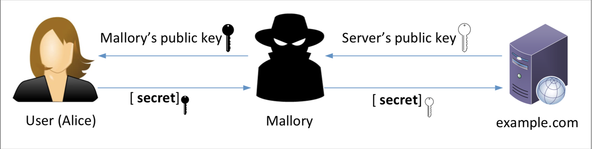

Public Key Infrastructure Lab
Overview
Teaching: 30 min
Exercises: 60 minQuestions
What is Certificate Authority?
How is PKI used in the web?
How does HTTPS work?
How do you sign certificates ?
Objectives
Follow the instructions to become the root CA, sign certificates, and manage HTTPS websites in Apache server.
Public Key Infrastructure Lab
Acknowledgment
This lab was originally designed by SEEDLabs and Dr. Wenliang Du.
Lab Overview
Public key cryptography is the foundation of today’s secure communication, but it is subject to man-in-the- middle attacks when one side of the communication sends its public key to the other side. The fundamental problem is that there is no easy way to verify the ownership of a public key, i.e., given a public key and its claimed owner information, how do we ensure that the public key is indeed owned by the claimed owner?
The Public Key Infrastructure (PKI) is a practical solution to this problem.
The learning objective of this lab is for students to gain the first-hand experience on PKI. By doing the tasks in this lab, students should be able to gain a better understanding of how PKI works, how PKI is used to protect the Web, and how Man-in-the-middle attacks can be defeated by PKI. Moreover, students will be able to understand the root of the trust in the public-key infrastructure, and identify the problems that will arise when the root trust is broken. This lab covers the following topics:
- Public-key encryption
- Public-Key Infrastructure (PKI)
- Certificate Authority (CA) and root CA
- X.509 certificate and self-signed certificate
- Apache, HTTP, and HTTPS
- Man-in-the-middle attacks
Lab Tasks
Task1: Becoming a Certificate Authority (CA)
A Certificate Authority (CA) is a trusted entity that issues digital certificates. The digital certificate certifies the ownership of a public key by the named subject of the certificate. In this lab, we need to create digital certificates, but we are not going to pay any commercial CA. We will become a root CA ourselves and then use this CA to issue certificate for others. Unlike other certificates, which are usually signed by another CA, the root CA’s certificates are self-signed. Root CA’s certificates are usually pre-loaded into most operating systems, web browsers, and other software that rely on PKI. Root CA’s certificates are unconditionally trusted.
The configuration file (openssl.cnf)
In order to use OpenSSL to create certificates, you have to have a configuration file. The configuration file usually has an extension .cnf. It is used by three OpenSSL commands: ca, req and x509. The configuration file is located in /usr/lib/ssl/openssl.cnf however, openssl.cnf has already been copied to /home/user/demoCA/openssl.cnf in the container. Openssl requires the following sub-directories however, the configuration has already been completed in the container.
dir = ./demoCA # Where everything is kept
certs = $dir/certs # Where the issued certs are kept
crl_dir = $dir/crl # Where the issued crl are kept
new_certs_dir = $dir/newcerts # default place for new certs.
database = $dir/index.txt # database index file.
serial = $dir/serial # The current serial number
For the index.txt file, an empty file has been created. For the serial file, a single number in string format (e.g. 1000) has been entered in the file.
Openssl Configuration
The required directories are configured under demoCA directory, which is located under /home/user directory.
In order to understand how openssl is configured, please take a look at demoCA directory and compare them to openssl.cnf file.
Certificate Authority (CA)
As we described before, we need to generate a self-signed certificate for our CA. This means that this CA is totally trusted, and its certificate will serve as the root certificate.
Run the following command in the demoCA directory to generate a self-signed certificate for the CA:
openssl req -new -x509 -keyout ca.key -out ca.crt -config openssl.cnf
You will be prompted for information and a password. Do not lose this password, because you will have to type the passphrase each time you want to use this CA to sign certificates for others. You will also be asked to fill in some information, such as the Country Name, Common Name, etc. The output of the command are stored in two files: ca.key and ca.crt. The file ca.key contains the CA’s private key, while ca.crt contains the public-key certificate.
Task2: Creating a Certificate for SEEDPKILab2018.com
Now that we have become a root CA, we are ready to sign digital certificates for our customers. Our first customer is a company called SEEDPKILab2018.com. In order for this company to get a digital certificate from a CA, it needs to go through three steps.
Step 1: Generate public/private key pair
The company needs to first create its own public/private key pair. We can run the following command to generate an RSA key pair (both private and public keys). You will also be required to provide a password to encrypt the private key (using the AES-128 encryption algorithm, as is specified in the command option). The keys will be stored in the file server.key:
openssl genrsa -aes128 -out server.key 1024
The server.key is an encoded text file (also encrypted), so you will not be able to see the actual content, such as the modulus, private exponents, etc. To see those, you can run the following command:
openssl rsa -in server.key -text
Step 2: Generate a Certificate Signing Request (CSR)
Once the company has the key file, it should generates a Certificate Signing Request (CSR), which basically includes the company’s public key. The CSR will be sent to the CA, who will generate a certificate for the key (usually after ensuring that identity information in the CSR matches with the server’s true identity). Please use SEEDPKILab2018.com as the common name of the certificate request.
openssl req -new -key server.key -out server.csr -config openssl.cnf
It should be noted that the above command is quite similar to the one we used in creating the self-signed certificate for the CA. The only difference is the -x509 option. Without it, the command generates a request; with it, the command generates a self-signed certificate.
Step 3: Generating Certificates
The CSR file needs to have the CA’s signature to form a certificate. In the real world, the CSR files are usually sent to a trusted CA for their signature. In this lab, we will use our own trusted CA to generate certificates. The following command turns the certificate signing request (server.csr) into an X509 certificate (server.crt), using the CA’s ca.crt and ca.key:
openssl ca -in server.csr -out server.crt -cert ca.crt -keyfile ca.key -config openssl.cnf
If OpenSSL refuses to generate certificates, it is very likely that the names in your requests do not match with those of CA. The matching rules are specified in the configuration file ( In openssl.cnf look at the [policy match] section). You can change the names of your requests to comply with the policy, or you can change the policy. The configuration file also includes another policy (called policy anything), which is less restrictive. You can choose that policy by changing the following line: (vim is available in the container).
"policy = policy_match" change to "policy = policy_anything".
Task3: Deploying Certificate in an HTTPS Web Server
In this task, we will explore how public-key certificates are used by websites to secure web browsing. We will set up an HTTPS website using openssl’s built-in web server.
Step 1: Configuring DNS
We choose SEEDPKILab2018.com as the name of our website. To get our computers recognize this name, let us add the following entry to /etc/hosts; this entry basically maps the hostname SEEDPKILab2018.com to our localhost (i.e., 127.0.0.1):
Edit the /etc/hosts file by typing in the following command.
sudo vim /etc/hosts
Add the following entries to the /etc/hosts file.
127.0.0.1 SEEDPKILab2018.com
Step 2: Configuring the web server
Let us launch a simple web server with the certificate generated in the previous task. OpenSSL allows us to start a simple web server using the s_server command:
# Combine the secret key and certificate into one file
cp server.key server.pem
cat server.crt >> server.pem
# Launch the web server using server.pem
openssl s_server -cert server.pem -www
By default, the server will listen on port 4433. You can alter that using the -accept option. Now, you can access the server using the following URL.
https://SEEDPKILab2018.com:4433
Most likely, you will get an error message from the browser. In Firefox, you will see a message like the following:
seedpkilab2018.com:4433 uses an invalid security certificate. The certificate is not trusted because the issuer certificate is unknown
Step 3: Getting the browser to accept our CA certificate
Had our certificate been assigned by VeriSign, we will not have such an error message because VeriSign’s certificate is very likely preloaded into Firefox’s certificate repository. Unfortunately, the certificate of SEEDPKILab2018.com is signed by our own CA (i.e., using ca.crt), and this CA is not recognized by Firefox. There are two ways to get Firefox to accept our CA’s self-signed certificate.
- We can request Mozilla to include our CA’s certificate in its Firefox software, so everybody using Firefox can recognize our CA. This is how the real CAs, such as VeriSign, get their certificates into Firefox. Unfortunately, our own CA does not have a large enough market for Mozilla to include our certificate, so we will not pursue this direction.
- Load ca.crt into Firefox: We can manually add our CA’s certificate to the Firefox browser by clicking the following menu sequence:
Edit -> Preference -> Privacy & Security -> View Certificates
You will see a list of certificates that are already accepted by Firefox. From here, we can “import” our own certificate.
Please import ca.crt, and select the following option:
Trust this CA to identify web sites.
You will see that our CA’s certificate is now in Firefox’s list of the accepted certificates.
Step 4: Testing our HTTPS website
Now, point the browser to https://SEEDPKILab2018.com: 4433. Please also do the following tasks:
- Modify a single byte of server.pem, restart the server, and reload the URL. What do you observe? Make sure you restore the original server.pem afterward. Note: the server may not be able to restart if certain places of server.pem is corrupted; in that case, choose another place to modify.
- Since SEEDPKILab2018.com points to the localhost, if we use https://localhost:4433 instead, we will be connecting to the same web server.
Task 4: Deploying Certificate in an Apache-Based HTTPS Website
The HTTPS server setup using openssl’s s_server command is primarily for debugging and demonstration purposes. In this task, we will set up a real HTTPS web server based on Apache. The Apache server, which is already installed in our container, supports the HTTPS protocol. To create an HTTPS website, we just need to configure the Apache server, so it knows where to get the private key and certificates. We give an example in the following to show how to enable HTTPS for a website www.example.com.
Your task is to do the same for SEEDPKILab2018.com using the certificate generated from previous tasks.
An Apache server can simultaneously host multiple websites. An Apache server can simultaneously host multiple websites. It needs to know the directory where website’s files are stored. This is done via its VirtualHost file, located in the /etc/apache2/sites-available directory.
To add an HTTP website, we add a VirtualHost entry to the file 000-default.conf. See the following example.
<VirtualHost *:80>
ServerName one.example.com
DocumentRoot /var/www/Example_One
DirectoryIndex index.html
</VirtualHost>
To add an HTTPS website, we need to add a VirtualHost entry to the default-ssl.conf file in the same folder. You will be able to modify the default-ssl.conf file by typing in:
sudo vim /etc/apache2/sites-available/default-ssl.conf
<VirtualHost *:443>
ServerName two.example.com
DocumentRoot /var/www/Example_Two
DirectoryIndex index.html
SSLEngine On
SSLCertificateFile /etc/apache2/ssl/example_cert.pem
SSLCertificateKeyFile /etc/apache2/ssl/example_key.pem
</VirtualHost>
The ServerName entry specifies the name of the website, while the DocumentRoot entry specifies where the files for the website are stored. The above example sets up the HTTPS site https://two. example.com (port 443 is the default HTTPS port).
In the setup, we need to tell Apache where the server certificate (SSLCertificateFile) and private key (SSLCertificateKeyFile) are stored.
After the default-ssl.conf file is modified, we need to run a series of commands to enable SSL. Apache will ask us to type the password used for encrypting the private key. Once everything is set up properly, we can browse the web site, and all the traffic between the browser and the server will be encrypted.
# Start the Apache server
sudo service apache2 start
# Test the Apache configuration file for errors
sudo apachectl configtest
# Enable the SSL module
sudo a2enmod ssl
# Enable the site we have just edited
sudo a2ensite default-ssl
# Restart Apache
sudo service apache2 restart
Please use the above example as guidance to set up an HTTPS server for SEEDPKILab2018.com.
Apache HTTPS Configuration
A HTML file named index.html has already been placed in the directory named /var/www/crypto
Please use them when configuring HTTPS.
Task 5: Launching a Man-In-The-Middle Attack
In this task, we will show how PKI can defeat Man-In-The-Middle (MITM) attacks. The following figure depicts how MITM attacks work.

Assume Alice wants to visit example.com via the HTTPS protocol. She needs to get the public key from the example.com server; Alice will generate a secret, and encrypt the secret using the server’s public key, and send it to the server. If an attacker can intercept the communication between Alice and the server, the attacker can replace the server’s public key with its own public key. Therefore, Alice’s secret is actually encrypted with the attacker’s public key, so the attacker will be able to read the secret. The attacker can forward the secret to the server using the server’s public key. The secret is used to encrypt the communication between Alice and server, so the attacker can decrypt the encrypted communication.
The goal of this task is to help students understand how PKI can defeat such MITM attacks. In the task, we will emulate an MITM attack, and see how exactly PKI can defeat it. We will select a target website first. In this document, we use example.com as the target website.
Step 1: Setting up the malicious website
In Task 4, we have already set up an HTTPS website for SEEDPKILab2018.com. We will use the same Apache server to impersonate example.com. To achieve that, we will follow the instruction in Task 4 to add a VirtualHost entry to Apache’s SSL configuration file: the ServerName should be example.com, but the rest of the configuration can be the same as those used in Task 4. Our goal is the following: when a user tries to visit example.com, we are going to get the user to land in our server, which hosts a fake website for example.com. If this were a social network website, the fake site can display a login page similar to the one in the target website. If the users cannot tell the difference, they may type their account credentials in the fake webpage; essentially disclosing the credentials to the attacker.
Step 2: Becoming the man in the middle
There are several ways to get the user’s HTTPS request to land in our web server. One way is to attack the routing, so the user’s HTTPS request is routed to our web server. Another way is to attack DNS, so when the victim’s machine tries to find out the IP address of the target web server, it gets the IP address of our web server. In this task, we will attack the DNS by modifying the /etc/hosts file.
<IP_Address> example.com
Step 3: Browse the target website
With everything set up, now visit the target real website, and see what your browser would say.
Task 6: Launching a Man-In-The-Middle Attack with a Compromised CA
Unfortunately, the root CA that we created in Task 1 is compromised by an attacker, and its private key is stolen. Therefore, the attacker can generate any arbitrary certificate using this CA’s private key. In this task, we will see the consequence of such a compromise. Please design an experiment to show that the attacker can successfully launch MITM attacks on any HTTPS website. You can use the same setting created in Task 5, but this time, you need to demonstrate that the MITM attack is successful, i.e., the browser will not raise any suspicion when the victim tries to visit a website but land in the MITM attacker’s fake website.
Hint: you will need to create a certificate for example.com using the CA’s private/public key (The CA is compromised).
Key Points
OpenSSL and Apache web server has already been installed in the container.
All of the sudo command needs to be launched from the user’s home directory!!
User will be able to edit files using vim.